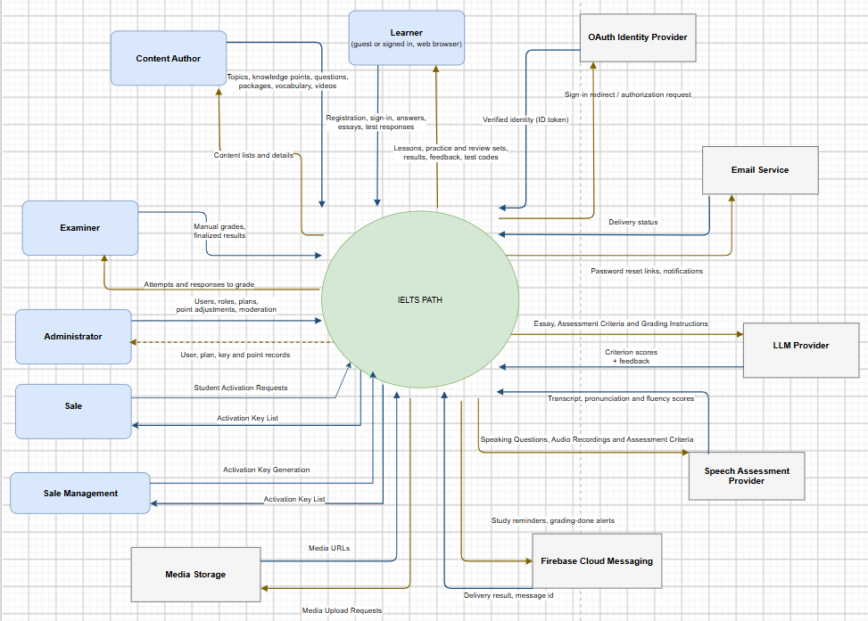

IELTS Space is an IELTS test-prep center in Hanoi that teaches in classes grouped by band. The main learning happens in class; outside class, learners practice on their own with no tool that matches what the center teaches.
Between lessons they practice with handouts from the teacher or free websites. Their work is not graded right away, and they do not know what knowledge gap caused a mistake.
They finish one band and wait for the next band class to open. During the wait there is almost nothing to practice, so they easily stop studying.
Two learners both aim for 7.0: one at 5.0 needs to firm up the basics, one at 6.5 needs advanced practice. Learners need to know where they are weak so they can review the right things.
Learners still practice online, but on generic websites that do not match what the current class covers. The center needs its own channel that follows exactly what it teaches.
The system serves only the center's learners. Premium content access is granted through activation cards issued by the sales team; no payment or accounting is added.
| Criteria | STUDY4 | ELSA Speak | Self-study at IELTS Space today |
|---|---|---|---|
| Audience | Vietnamese IELTS test-takers, from building foundations to targeting high bands | People who want to improve speaking; offers an IELTS Speaking course | Learners currently enrolled and learners waiting for a new band class |
| Features | 4-skill courses; practice tests per skill with materials | Pronunciation and fluency feedback through speech recognition; AI conversations; personalized path; games | Teachers hand out practice materials between lessons |
| Strengths | Many practice tests; familiar question types and exam format | Many chances to speak, fast feedback | Materials written by the center's teachers, matching class content |
| Limitations | Shows only the score and number of correct answers; no explanation of why an answer is wrong or what to study next; leans toward test practice over building knowledge | Focused on speaking; no IELTS path combining Reading, Listening and Writing with practice tests | No instant grading or feedback; learners do not know which knowledge they are weak at; nothing to practice while waiting for a class |
Results show only a score, not which knowledge is missing or what to review next.
Learners jump into tests before mastering the knowledge the question type requires.
ELSA gives feedback on speaking only. There is no place to practice all 4 skills.
Self-study does not tell learners which topics they have mastered or which knowledge points are still weak.
Between lessons and while waiting for a new class, learners have no online content that matches the center's band.
Practicing alone is discouraging; there is no community or activity to bring learners back.
Words are learned from lists, without usage context and without regular review.

The first attempt at each question in exercises, Practice, review, Writing and tests is recorded as correct or wrong for the knowledge point the question teaches. Retries are not recorded again.
Newer answers weigh more than older ones. Weights from oldest to newest: 0.5 · 0.7 · 0.85 · 0.95 · 1.0. The newest answer always weighs the most.
With only 1 answer: capped at 0.5. With 2 answers: capped at 0.8. From 3 answers up: capped at 1.0.
Mastery = sum of weights of correct answers ÷ sum of weights of all answers
(0.7 + 0.85 + 1.0) ÷ (0.7 + 0.85 + 0.95 + 1.0) = 2.55 ÷ 3.5
Learners see this level for each knowledge point. After a test, knowledge points below 0.6 generate a review exercise.
A short placement test estimates the band and suggests a suitable course.
Each course belongs to one band and contains topics and lessons that teach the knowledge for each question type before practice.
Wrong answers are recorded against the knowledge point that is missing.
Weak knowledge points trigger their own review exercises, so the next step is always specific.
Writing and Speaking get feedback against IELTS criteria; a 4-skill mock test shows readiness.
IELTSPath is IELTS Space's online practice channel on the web, for learners currently studying at the center and learners waiting for a new band class. The system supplements, and does not replace, classroom lessons.
Issues activation cards to learners who have enrolled so they can unlock premium content. The system only records which card was activated, by which account, and when.
No learner tracking. The system has no reports or dashboards for teachers or the center about what learners practice. Progress and weak points are used only to choose review exercises and for learners to view themselves.
Admin creates card codes for each premium plan, for example a batch of 500 cards.
A learner who enrolls in a course at the center receives a card from sales; pricing and payment collection are the center's job.
A valid code unlocks premium content for the account; each card can be used only once.
Stores which card, which account and when. If there is a question, sales just looks up the log.
Creates card codes, activates them, unlocks premium, logs activations. Some topics are open to every account.
Online payment gateway, invoices, accounting, revenue statistics. Sales and the center handle these.
| Code | Feature | Description |
|---|---|---|
| FE-01 | Placement test and course suggestion | A placement test estimates the band and suggests a course for that band |
| FE-02 | Band-based courses, multi-skill lessons | A band course contains topics and lessons with theory and exercises for Reading, Listening and Writing; Speaking is practiced through FE-10 |
| FE-03 | Adaptive practice and review | Practice results update the mastery of each knowledge point; weak points trigger review sets and a theory refresher |
| FE-04 | AI Writing feedback | AI grades essays against the IELTS Writing criteria and lists strengths and areas to improve for each criterion |
| FE-05 | Topic and course tests, personal progress | A final test closes each topic and course; learners view their own mastery and progress |
| FE-10 | Speaking practice with AI feedback | Record IELTS Speaking answers and practice speaking along with videos; AI scores the speech and returns a transcript with pronunciation and fluency scores |
| FE-11 | Full IELTS mock test | Mock test for all 4 skills; Reading and Listening are auto-graded, Writing and Speaking are graded by an examiner |
| Code | Feature | Description |
|---|---|---|
| FE-06 | Learning games and competitions | Real-time vocabulary and grammar games in game rooms; learners compete against each other |
| FE-07 | Vocabulary via video and flashcards | Learn words in the context of videos, save video clips, review with flashcard sets and notes |
| FE-08 | Learner community | Post questions and study tips, comment and react; posts are moderated |
| FE-09 | Activation cards for premium content | Sales issues activation cards to enrolled learners to unlock premium content; the system records who activated a card and when |
Real-time competitive games, slow AI essay grading, and learning itself must be fast. Separating them keeps the heavy parts from slowing learning down.
How weak points are scored and review exercises are chosen needs continuous experimentation and upgrades. Separating it lets it change without affecting tests, content or accounts.
Content, test results, learning progress and activation cards are changed by different people. Each part keeps its own data with clear boundaries.
If games or the community have an incident, learners can still study; test results are saved and reprocessed, not lost.
In addition, team members work in parallel on separate parts, testing and deploying independently.
| Code | Out of scope | Reason |
|---|---|---|
| LI-01 | Tracking and monitoring learners: teacher dashboards, practice reports for the center | The system is a self-study tool for learners; learning data is used only to choose review exercises and for learners to view themselves |
| LI-02 | Trial learning for unregistered visitors, enrollment channel | The system serves only the center's learners; advising and enrollment remain the center's job |
| LI-03 | Online payment gateway, invoices, accounting, revenue statistics | Collecting payment is the job of sales and the center; the system only creates card codes, activates them and logs activations |
| LI-04 | Direct class operations: timetables, class assignment, attendance, tuition | IELTS Space already runs these with its own staff and tools |
| LI-05 | Online classes, lecture videos with teachers | The system is a self-study channel; lectures with teachers stay in class |
| LI-06 | Official IELTS certificates or band guarantees | Mock test results are estimates for practice and do not replace the official IELTS exam |
| LI-07 | RAG-based IELTS chatbot assistant | Needs a curated, tested IELTS knowledge base so answers are trustworthy |
| LI-08 | Use by other centers (multi-center, franchise) | Built only for IELTS Space; multiple centers would need separate data, branding and administration |
| LI-09 | Mobile app (iOS / Android) | The first release focuses on the web; a mobile app comes after the web learning flow is validated with learners |
Satisfaction is measured by a voluntary end-of-course survey run by the center outside the system, not by tracking learners.